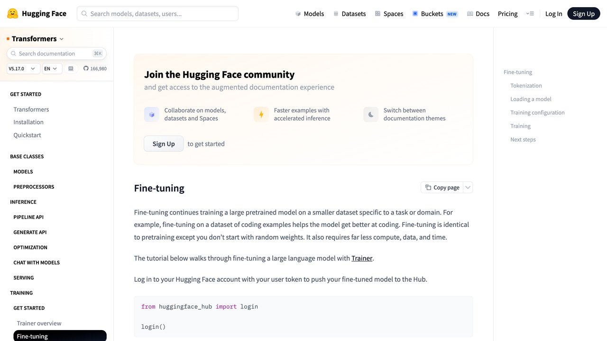
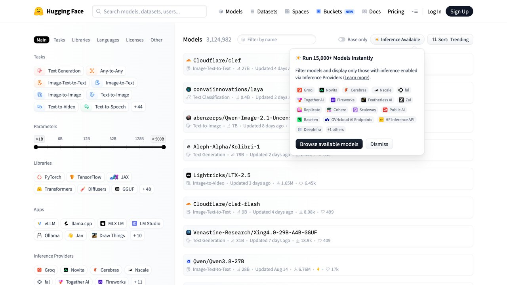

L a pregunta llega siempre con la misma forma: «el modelo no me responde como necesito, ¿lo entreno?». Y casi siempre la respuesta correcta es que no, todavía no. Porque «entrenarlo» es la más cara, la más lenta y la más frágil de las tres cosas que puedes hacer, y hay dos anteriores que resuelven la mayoría de los casos.
En el archivo ya hemos explicado cada técnica por separado: qué es un prompt y cómo escribir uno bueno y cómo funciona RAG. Lo que faltaba era la pieza que las conecta: cuál de las tres toca en tu caso, en qué orden probarlas y cómo saber que has agotado una antes de pasar a la siguiente. Eso es esta guía.
Vaya por delante la conclusión, porque no hay motivo para esconderla hasta el final: prompt primero, RAG después, fine-tuning al final y solo por motivos muy concretos. El resto del texto es por qué ese orden es ese, y qué señales te dicen que toca subir un escalón.
Las tres palancas, y qué toca cada una
La confusión de fondo viene de tratarlas como tres versiones de lo mismo con distinto precio. No lo son. Cada una modifica una pieza diferente del sistema, y esa pieza determina qué clase de problema puede arreglar.
Prompting. Cambia las instrucciones que le das. No toca el modelo ni le aporta datos que no tenga: reorganiza lo que le pides, le da ejemplos de cómo quieres la respuesta y acota la tarea. Es reversible en un segundo y no cuesta nada preparar.
RAG. Cambia lo que el modelo tiene delante. Antes de responder, un buscador va a tus documentos, saca los fragmentos pertinentes y los pega dentro de la pregunta. El modelo sigue siendo el mismo; lo que cambia es que ahora tiene los datos a la vista.
Fine-tuning. Cambia el modelo. Se le pasan miles de ejemplos de entrada y respuesta deseada y se ajustan sus pesos para que, por defecto, responda como esos ejemplos. Es lo único de los tres que deja un artefacto nuevo, que tendrás que mantener.
De ahí sale una regla que aguanta bien casi todos los casos: si el problema es de forma, mira al fine-tuning; si es de información, mira a RAG; si es de instrucciones mal dadas —y lo es más veces de las que uno admite—, mira al prompt. Un modelo que contesta con la estructura equivocada tiene un problema de forma. Un modelo que no sabe cuál es vuestra política de devoluciones tiene un problema de información. Un modelo que hace tres cosas cuando le pediste una tiene un problema de instrucciones.
Si alguno de los términos que van saliendo te suena a jerga, están todos ordenados en nuestro glosario de términos de IA.
El orden por defecto, y por qué es ese
El orden no es una preferencia estética. Responde a una propiedad muy concreta: cuánto te cuesta deshacerlo cuando te equivocas. Y en este terreno te vas a equivocar varias veces antes de acertar, así que conviene equivocarse barato.
Primero el prompt. Lo cambias, lo pruebas y lo vuelves a cambiar en el tiempo que tardas en leer esta frase. No hay que preparar datos, no hay que esperar a que termine un entrenamiento y no hay nada que desplegar. Además, el prompt es el sitio donde descubres qué está fallando de verdad: mucha gente que cree tener un problema de conocimiento tiene en realidad una instrucción ambigua, y lo comprueba en dos iteraciones.
Después RAG. Cuando el prompt ya está bien y el modelo sigue sin saber algo que solo está en tus documentos, la respuesta no es enseñárselo: es dárselo. Montar una recuperación decente tiene trabajo —trocear los documentos, indexarlos, ajustar cuántos fragmentos traes—, pero se cambia en caliente. Actualizas un documento y la siguiente respuesta ya lo refleja, sin reentrenar nada. Es también la vía que reduce las invenciones, porque el modelo responde con el texto delante en lugar de tirar de memoria: eso es lo que explicamos en grounding, o cómo evitar que tu IA invente datos.
Y solo entonces fine-tuning. Aquí el compromiso es de otro orden. Necesitas un conjunto de ejemplos limpio y numeroso —y prepararlo es la partida de coste que todo el mundo subestima—, necesitas evaluar si el modelo ajustado es mejor que el de partida, y necesitas rehacerlo cuando salga el modelo base siguiente, que en 2026 es cada pocos meses. Un ajuste hecho sobre un modelo que se retira no se migra: se repite.
No pases al siguiente nivel porque el actual «va regular». Pasa cuando puedas decir en una frase qué falla y comprobar que el nivel actual no puede arreglarlo por diseño. «El prompt no cabe porque necesito veinte ejemplos de formato en cada petición» es una razón. «Le falta información que no está en ningún documento mío» no es una razón para ajustar: es una razón para conseguir el documento.
Hay un matiz que conviene tener a mano: el prompt y RAG se pagan en cada petición, y el fine-tuning se paga una vez —más el mantenimiento—. Con volúmenes altos, un prompt de sistema de dos mil tokens repetido un millón de veces deja de ser gratis. Si quieres hacer ese cálculo antes de decidir, tenemos una calculadora de coste de API para ponerle cifras a tu caso.
Lo que el fine-tuning no arregla: meter datos nuevos
Esta es la idea equivocada más extendida y la más cara, así que merece su propia sección: mucha gente cree que ajustar un modelo con sus documentos sirve para que se los aprenda. Sirve regular, y además tiene un efecto secundario desagradable que está medido.
El trabajo de referencia es «Does Fine-Tuning LLMs on New Knowledge Encourage Hallucinations?», de Zorik Gekhman y coautores (Google Research, Technion y la Universidad Hebrea de Jerusalén), publicado en las actas de EMNLP 2024. Controlaron qué parte de los ejemplos de ajuste contenía información que el modelo ya sabía y qué parte le era nueva, y midieron dos cosas.
La primera: los ejemplos con conocimiento nuevo se aprenden mucho más despacio que los que encajan con lo que el modelo ya tenía. La segunda, y la que importa: a medida que esos ejemplos nuevos sí se van aprendiendo, la tendencia del modelo a inventar crece de forma lineal. No es que el dato nuevo entre mal; es que el proceso de meterlo a la fuerza le enseña a responder con seguridad a cosas que no sabe.
La lectura que hacen los autores es la que conviene interiorizar: el conocimiento factual se adquiere sobre todo en el preentrenamiento, y el ajuste posterior sirve para enseñarle a usar mejor lo que ya tiene. Si lo que te falta es información, lo que necesitas es ponérsela delante en el momento de preguntar. Es literalmente la definición de RAG, y es también la razón de que las alucinaciones suban cuando se fuerza el camino contrario.
Pégale en el prompt, a mano, el documento que contiene la respuesta y vuelve a preguntar. Si ahora acierta, tu problema es de información y se llama RAG. Si sigue respondiendo con el formato equivocado, el tono equivocado o saltándose el esquema que le pediste, tu problema es de forma, y ahí el fine-tuning sí tiene algo que decir.

Cuándo el fine-tuning sí es la respuesta
Dicho todo lo anterior, hay casos en los que ajustar es exactamente lo correcto, y conviene saber reconocerlos para no descartar la herramienta por moda contraria.
Forma muy definida y muy repetida. Si necesitas que cada respuesta salga en un esquema fijo, con un tono concreto y el vocabulario de tu sector, y lo necesitas un millón de veces, enseñárselo con ejemplos es más barato y más consistente que explicárselo en cada petición. Es el caso canónico.
Un modelo pequeño haciendo el trabajo de uno grande en una tarea estrecha. Clasificar, extraer campos, etiquetar. Ajustar un modelo modesto sobre esa única tarea puede acercarlo mucho a uno grande a una fracción del coste y la latencia. Si además quieres que corra en tu propia máquina, eso se cruza con lo que contamos en IA local: correr modelos en tu ordenador.
Un prompt que ya no cabe o ya no compensa. Cuando llevas veinte ejemplos dentro del prompt para fijar el estilo, estás pagando esos tokens en cada llamada y además estás llenando la ventana de contexto con material que compite por la atención del modelo — un efecto que explicamos en la guía de ventana de contexto y memoria. Mover esos ejemplos al modelo libera sitio y dinero.
Y hay un punto que casi nunca se dice: no son excluyentes, y sus ganancias se suman. En el estudio de Microsoft Research «RAG vs Fine-tuning: Pipelines, Tradeoffs, and a Case Study on Agriculture», que probó ambas vías sobre un corpus agrícola con varios modelos, el ajuste subió la precisión más de 6 puntos porcentuales y RAG añadió 5 puntos más encima de esa mejora. La conclusión útil no es «cuál gana», sino que la pregunta «¿cuál elijo?» está mal planteada en cuanto el sistema es serio.
La factura de entrenamiento no es la partida cara. La cara es preparar los ejemplos: reunirlos, limpiarlos, decidir cuál es la respuesta correcta en los casos dudosos y mantener ese conjunto cuando el criterio cambie. Si no tienes ya ese material o alguien que lo pueda producir con criterio, el proyecto de fine-tuning no ha empezado todavía, por mucho que la API sea barata.
El giro de 2026: OpenAI cierra su fine-tuning de autoservicio
Algo ha cambiado este año que afecta directamente a esta decisión, y conviene saberlo antes de planificar nada.
El 7 de mayo de 2026 OpenAI publicó un aviso de retirada de su plataforma de ajuste de autoservicio. El cierre es escalonado: desde esa fecha, las organizaciones que no hubieran ajustado antes ya no pueden crear trabajos de entrenamiento nuevos; el 2 de julio se estrechó más el acceso (solo siguieron pudiendo crear trabajos las organizaciones que habían usado un modelo ajustado en los últimos 60 días); y el 6 de enero de 2027 los clientes que quedaban dejarán de poder crear trabajos nuevos. Los modelos ya ajustados siguen respondiendo mientras su modelo base siga vivo, así que no es un apagón inmediato — es el fin de poder crear versiones nuevas. Y el modelo base sí caduca: el 14 de octubre OpenAI anunció que retira de la API GPT-4o, GPT-4o mini, GPT-4.1 y GPT-4.1 mini el 14 de enero de 2027, y los modelos ajustados a partir de ellos siguen el mismo calendario (lo contamos aquí). Además, según la página oficial de deprecaciones, seis snapshots ajustados concretos (de o4-mini, GPT-3.5 Turbo, GPT-4, GPT-4.1 nano, babbage-002 y davinci-002) se apagan el 23 de octubre de 2026.
El motivo que da la empresa es el que da título a esta guía: sus modelos base actuales siguen instrucciones y formatos lo bastante bien como para que buena parte del ajuste haya dejado de hacer falta, y el camino del prompt sale más barato y más rápido. Se puede tomar con escepticismo —es una decisión de producto además de un argumento técnico, y el ajuste tiene costes operativos altos para quien lo ofrece—, pero coincide con lo que se ve en la práctica: cada generación de modelos se come una parte del terreno que antes obligaba a ajustar.
Que OpenAI cierre el suyo no significa que el fine-tuning desaparezca. Google mantiene en su documentación el ajuste supervisado de Gemini en Google Cloud (comprueba qué modelos concretos lo admiten en cada momento), y ajustar un modelo de pesos abiertos en tu propio hardware —con las técnicas de ajuste parcial tipo LoRA, que tocan una fracción mínima de los parámetros— sigue siendo perfectamente viable y es donde más se hace hoy fuera de las grandes empresas.
La lección práctica es la de siempre en esta casa: no ates tu producto a una capacidad de un único proveedor. Quien había construido encima del ajuste de OpenAI se ha encontrado con unos ocho meses de aviso (de mayo de 2026 a enero de 2027) y, según la página oficial de deprecaciones, sin ningún servicio sustituto indicado. Con Claude, el ajuste de Claude 3 Haiku que se ofreció en Amazon Bedrock en 2024 ya no es una opción: ese modelo está retirado en la API de Anthropic desde el 20 de abril de 2026, y no hemos podido verificar que exista ajuste para los modelos actuales. Es el mismo patrón que vimos con el cierre de otra herramienta de OpenAI este año, contado en la guía de herramientas de vídeo con IA.
Cinco preguntas para decidir en diez minutos
Contéstalas en orden y para en la primera que te dé una respuesta. Si una te obliga a decir «no lo sé», esa es la tarea de hoy, no la elección de técnica. Y cuando ya tengas clara la técnica, queda la otra decisión: con qué tipo de modelo la montas, que es lo que resuelve modelos abiertos o cerrados.
1. ¿Puedes describir el fallo en una frase concreta? «Va regular» no es un diagnóstico. «Devuelve tres párrafos cuando le pido una tabla» sí. Sin esto no hay elección posible, porque las tres técnicas arreglan cosas distintas y no sabes cuál es la tuya.
2. Si le pegas a mano la información que falta, ¿acierta? Si sí, tu camino es RAG y el fine-tuning no pinta nada. Si no, el problema no es de datos.
3. ¿Has probado a reescribir el prompt con dos o tres ejemplos de la respuesta que quieres? Es la prueba más barata que existe y la que más veces cierra el caso. Si con tres ejemplos dentro del prompt ya sale bien, tienes un problema de instrucciones, no de modelo.
4. ¿Tienes ya cientos o miles de ejemplos de entrada y respuesta correcta? Si no los tienes ni sabes de dónde sacarlos con criterio, el fine-tuning no es una opción todavía, sea cual sea el diagnóstico. Conseguirlos es el proyecto.
5. ¿Con qué vas a medir que ha mejorado? Si la respuesta es «se nota», no vas a poder saber si el ajuste sirvió, y vas a mantener un modelo propio a ciegas. Un conjunto pequeño de casos con respuesta correcta conocida, contados antes y después, vale más que cualquiera de las tres técnicas mal elegida.
Esa última pregunta es la que más proyectos hunde, y no es exclusiva de este tema: es el mismo fallo que recogemos en los errores comunes al automatizar tareas con IA. Desplegar algo que no sabes medir es desplegar algo que no sabes si funciona.
Si llegas al final de las cinco y sigues en el fine-tuning, adelante: tienes un problema de forma, ejemplos con los que enseñarla y una forma de comprobar que ha mejorado. Ese es el caso en el que ajustar el modelo es la decisión correcta, y en el que además suele salir bien. Lo que casi nunca sale bien es llegar ahí por el atajo.
Las tres palancas de un vistazo
Una tabla para tener a mano cuando dudes. Resume lo que hemos desarrollado arriba:
| Prompting | RAG | Fine-tuning | |
|---|---|---|---|
| Qué cambia | Las instrucciones | Lo que el modelo tiene delante | Los pesos del modelo |
| Arregla | Fallos de instrucciones, formato puntual | Falta de información, datos que cambian | Forma muy repetida, tono, tarea estrecha |
| No arregla | Falta de datos | Un modelo que ignora el formato | Falta de conocimiento (puede empeorarlo) |
| Plazo para cambiarlo | Segundos | Minutos u horas (actualizas el documento) | Horas o días; hay que reentrenar |
| Coste principal | Tokens en cada petición | Montar y mantener la tubería, más tokens por consulta | Preparar buenos ejemplos y repetirlo con cada modelo base |
| Riesgo de dependencia | Bajo | Medio | Alto: el proveedor puede retirar el modelo base |
Fuente oficial: Calendario de deprecaciones de OpenAI · Deprecaciones de modelos de Anthropic · Gekhman et al. (EMNLP 2024) · Balaguer et al. (Microsoft)